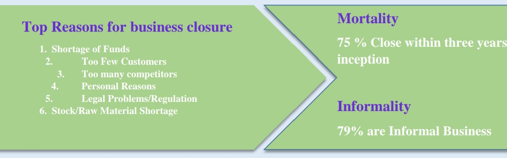
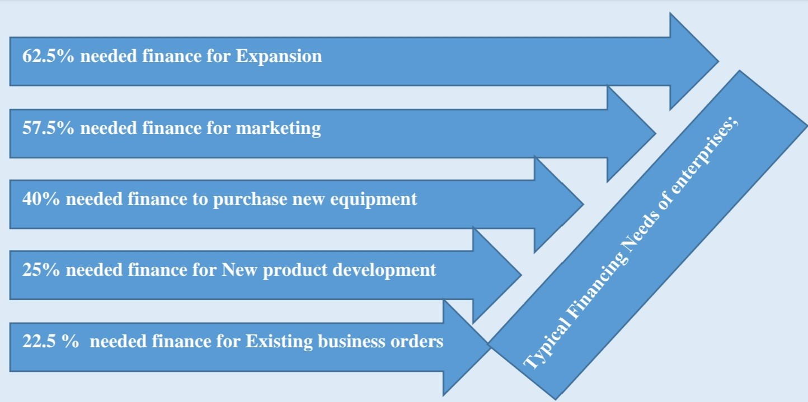
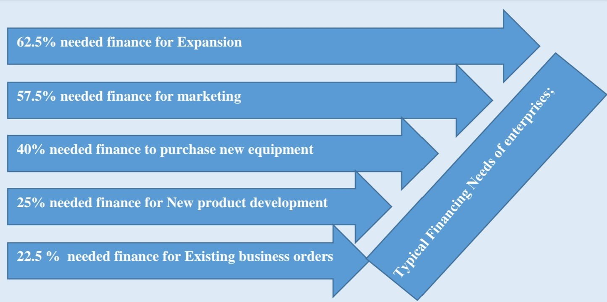

According to the Central Bank of Kenya (CBK), 2021 was a year of recovery coming after “the year like no other” that was 2020, dominated by the COVID-19 pandemic. The domestic economy rebounded strongly in 2021, supported by recovery in non-agricultural activity following easing of COVID-19 restrictions. The economy grew by 7.5 percent, compared to a contraction of 0.3 percent in 2020. The banking sector’s asset base grew by 11 percent to approximately Ksh.6.0 trillion in 2021 from Ksh.5.4 trillion in 2020. The increase in total assets was mainly attributed to the growth in investments in government securities and loans and advances
An earlier Economic Survey report (CBK 2014) indicated that MSMEs constitute 98 percent of all business in Kenya, create 30 percent of the jobs annually as well as contributing 3 percent of the GDP and; Around 80 percent of the 800,000 jobs created in the year came from the informal sector, which is dominated by the MSMEs. About 80% of MSMEs employ between 1 and 10 Employees. According to a report by Deloitte Kenya Economic Outlook (2016), SMEs are hindered by inadequate capital, limited market access, poor infrastructure, inadequate knowledge, skills, and rapid changes in technology. Corruption and other unfavorable regulatory environments present other bottlenecks to this vital Sector of the economy
Credit Absorbed in the Manufacturing sector was KSh 366.9 billion in 2019, KSh 410.3 billion in 2020 and KSh 464.0 billion in 2021 ( KNBS 2022). This indicates that Manufacturing MSMEs have increasingly relied on available credit facilities from commercial banks and industrial financial institutions to meet their financial needs. Hence, this has remained a critical service for SMEs survival and sustainability. It also implies how important the sector is to financial institutions.
Interest Rates by Commercial banks stood at 12.24 per cent in December 2019. The same was 12.02% in Dec 2020 and 12.16% in Dec 2021.The cost of credit has generally more or less remained the same, thus motivating SMEs to borrow. However to promote manufacturing, special facilities for SMEs should be developed. Comparatively the interest rates are still high and do not give Kenyan SMEs leverage in production based on borrowed funds. Information on Total Cost of Credit (TCC) and tool for calculating the TCC for different financiers is available at The Bankers Association
While Kenya’s Micro, small and medium enterprises (MSMEs) continue to create jobs and boost the country’s GDP, they face a myriad of challenges that impede their growth. This is reflected in various studies undertaken to determine the challenges and possible interventions towards MSMEs development.
The 2016 MSMEs survey flushed out two key issues or challenges to the establishment and growth of MSMEs;
Informality;One of the characteristic of the Kenyan MSMEs sector is a high informality rate at 79 percent (KNBS MSME Report 2016). The state of informality leads to lack of sufficient data for government as well as other stakeholders required to make optimal policy and other interventions needed to develop SMEs as well as impedes SMEs from becoming globally competitive.
Mortality;Kenyan MSMEs have a mortality rate of 75 percent within three years of inception (3 out of 5 SMEs dying) with top reasons for business closure being;
In 2018, Viffa Consult conducted a study on SME to establish broadly; their current financing challenges relating to access to finance and their general financial needs. The results were as follows;
Access to finance was ranked as the highest hindrance in starting and running a business. This was followed by access to markets, pricing of products/services, obtaining payment for outstanding invoices, dealing with legal/government/administrative matters (Taxesetc), Obtaining and paying for business permits, finding suppliers and being alone as an entrepreneur respectively.
On equity financing; 80% was raised from Owners fund & internal revenue while 20% was raised from Family & friends, Angel investors, Venture Capitalist and others.
 

Clearly, these reports indicate that access to finance is the single most serious challenge to MSMEs in Kenya leading to high closure rate, and the high level of informality, hence requiring further investigation and exploration of possible solutions to the challenges.
Investigating the role of finance for Kenyan Manufactures, a white paper by SET ( Phyllis P, 2016) observed that informality, cost of credit and lack of multiple financial products are the top challenges faced by manufacturing MSMEs in Kenya. These are occasioned and characterized by;
Over-Reliance on Overdraft Facilities-ODs are easily callable, short-term, facilities that suit banks, rather than MSME’s longer-term investment funding needs. The overreliance on overdrafts limits MSME longer-term investment and increases cost of credit.
Institutional Obstacles to Diversified Finance -Accessibility of debt and equity finance is still limited to Kenya’s larger SMEs. Only larger Kenyan companies are able to source market-based funds, despite the growth in the economy’s broader financial market.
Limited Loan Disbursal -A number of factors such as credit rating and managerial levels shape the ability of Kenya’s manufacturers to borrow and take out loans.
A survey carried out by the KAM with KPMG in May 2020 found that Manufacturing MSMEs are fighting for survival, while bracing the effects of Covid 19. It observes that among manufacturers surveyed;
On Priorities;78% said the top priority was reducing costs, 61% cited retaining jobs and 53% improving cash flows.
In terms of output;42% said they were operating at less than half production capacity, while the average utilized capacity for SMEs was just 37%.
On Constraints;86% said that cashflow constraints were affecting their ability to meet tax obligations, and pay employees and operating costs.
While Digital lending facilities continue to grow in importance, utilization and accessibility to MSMEs, Banks continue to retain top spot for preferred location for business related funds due to their ability to offer big-ticket size credit coupled with increasing reforms taking place in the sectors such as:
* Credit Guarantee Scheme by GOK and private sector financiers
* Banks accessing low cost funding for forward lending to SMEs
* Movable property security rights act enacted
* Rate cap repeal
On Purpose for required Funding; Paying monthly bills followed by purchase of equipment are top priority as a measure to recover from Covid 19 in 2022 followed closely by new product development and marketing. This compared with 2021 where monthly utilities was an overwhelming majority as SMEs struggled for revenue due to slowdown related to negative effects of Covid 19
Business recovery Needs; % of SMEs need soft loans that are priced below market rate, 25% needs grants in form of cash injection to business to cater for equipment purchase, utilities and new product development, 21% needs in kind grant and finally 4% needs normal loans.
On amounts required, about 79% of MSMEs require up to Ksh 0.25m, 19% between 0.25 and 0.5 while 2% requires over Ksh 1m